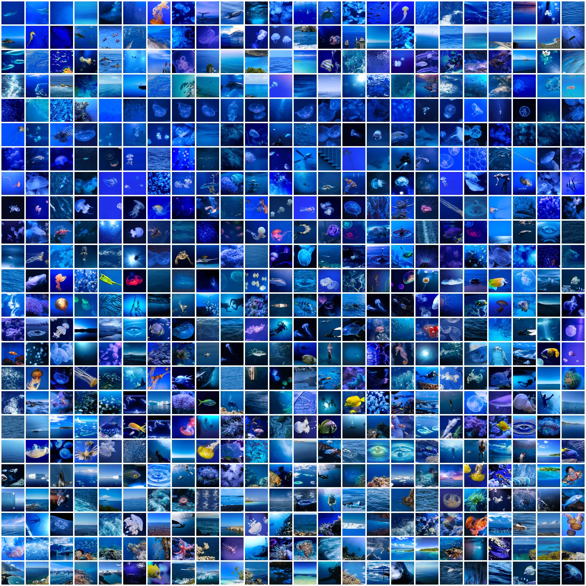
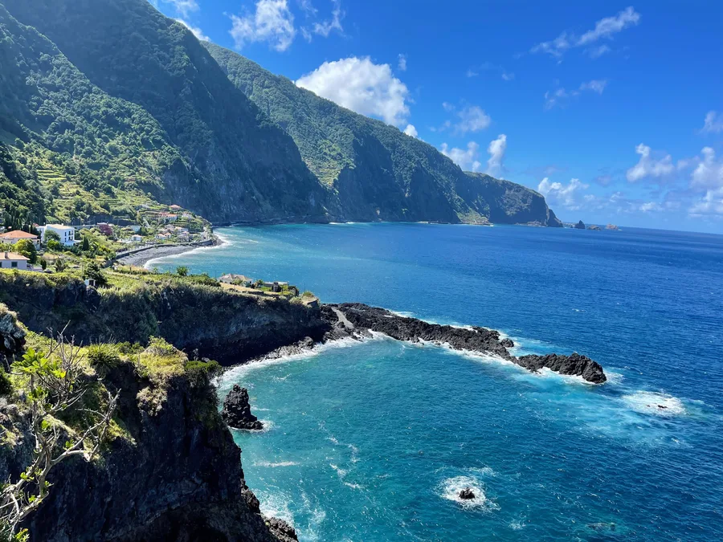
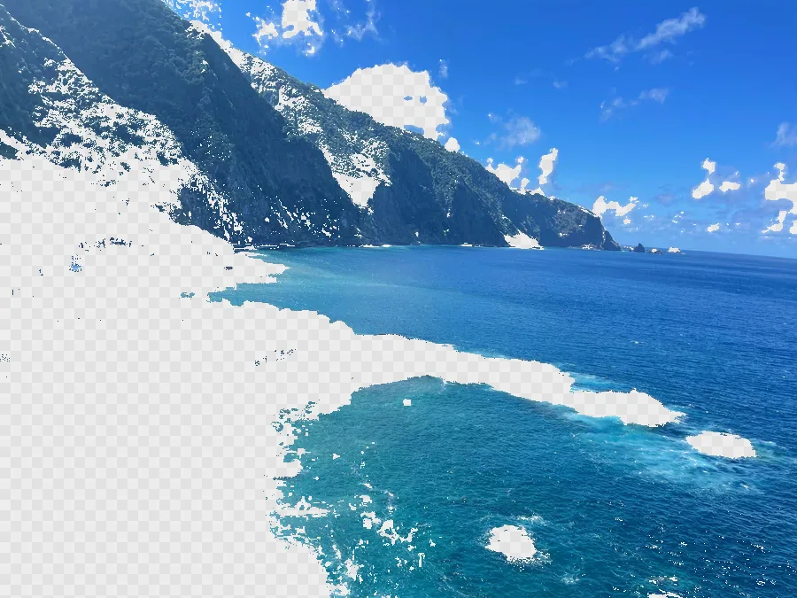

This experiment is the research behind the colour system I built for QAXD, the cybersecurity product I worked on during my internship. On paper the brief was small: refresh the brand blue. In practice it became a question that connects straight back to Kane’s Chromatic Algorithms. Kane shows how digital colour slowly turned into defaults, menus and standards (Kane, 2014). A brand colour is the most standard colour a company has. It is copied into every button, chart and icon, and nobody asks where it came from. So I wanted to try the opposite: a brand blue with a source, and a method that I could explain and repeat.
This post covers the first half of that process, from photographs of the ocean to one new blue, and then from that blue to ten core colours. The second half, turning each core colour into a full scale with Bézier curves, is in the next post.
- 01image researchcollect and filter ocean photos; pull out the blue pixels5,700 blue samples
- 02brand blueweight by frequency, then calibrate#005AEB
- 03hue expansionturn around the hue wheel; check meaning in UIten C6 core colours
- 04scalesfit cubic Bézier curves in LCHC10–C1 for every group
- 05modes & checksdark mode, WCAG contrast, tokenslight + dark palettes
Why the ocean?
Security products often borrow the same visual language: dark screens, neon green, padlocks. I wanted the brand to feel calm and reliable instead of alarming. The ocean has exactly the qualities I was looking for. It feels stable and trustworthy, but it also has depth and constant change under the surface, which is a fair picture of the digital environment a security product watches over. Choosing it was a design decision; everything after that had to be evidence.
01 · Collecting the ocean
All the code for this part is in a separate repository, BC-analysis (Cai, 2026). Every image and number below comes from running it on the real photo set.
Choosing the photos
I collected 576 ocean photographs through the Unsplash and Pexels APIs (Unsplash, n.d.; Pexels, n.d.), searching with about forty keywords such as “deep blue ocean water close up”, “ultramarine ocean water texture” and “cobalt blue underwater animal”. I was not building a mood board. I was trying to build a consistent set of samples, so that later statistics would compare similar kinds of blue rather than a mix of shadows, sky and seaweed.
So every candidate photo was scored before it was downloaded. The script measured how much of the image was blue, how much was vivid, and how much was white, grey, near-black, cyan-green or purple. A photo only passed if, for example, at least 60% of it was blue, no more than 20% leaned cyan-green and no more than 12% leaned purple or white. Duplicates were removed with a perceptual hash. Here is the whole set, 24 × 24:

Seeing them all at once was more revealing than looking at them one by one. The set is not “the ocean”. It is very deep, very saturated, slightly violet blue, with a lot of jellyfish and aquarium light. That is partly the sea and partly my keywords and thresholds, and I come back to this in the reflection.
Filtering the pixels
Even a good photo contains rocks, clouds and foam. Before extracting colours, each photo goes through a pixel filter in HSV. HSV is useful here because hue is a single number, so “is this pixel blue?” becomes a range check. A pixel is kept only if its hue is between 190° and 250°, its saturation is at least 40% and its brightness is between 40% and 98%. Up to 15,000 kept pixels per photo go forward.
also removed: anything with saturation under 40% (greys, foam) or brightness under 40% or over 98% (near-blacks and blown-out highlights).


This one example taught me something. I expected the filter to keep “the sea” and drop “the land”. Instead the green hillside, the clouds and the bright foam are removed, but the shadowed cliffs survive, because in shade the rock is lit by the blue sky and really is blue. The filter does not know what a sea is; it only knows what blue is.
From pixels to colour samples
A filtered photo still contains thousands of slightly different blues. To turn them into a few representative colours, the program converts the kept pixels to CIE Lab and runs K-means clustering with ten clusters. Lab separates lightness (L*) from colour direction (a*, b*), and distances in Lab are much closer to how different two colours look than distances in RGB. That matters, because K-means is all about distance. It moves K centres until the total squared distance from every sample to its nearest centre is as small as possible (Lloyd, 1982):
J = Σi Σx ∈ Ci ‖x − μi‖²
Each centre μi becomes one representative blue, and the share of the photo it covers is stored with it as a weight. So every sample remembers not only what blue it is, but how much of the sea it was.
#1E4D7A15.7%#2B76DC13.2%#2970B913.1%#2F7C9910.3%#2F669410.0%#2960819.1%#4290EC8.2%#6CA8ED7.2%#3885BA7.2%#529EBB6.0%| field | why it is stored |
|---|---|
HEX | how designers will talk about it |
RGB | how the screen makes it |
HSV | hue / saturation / value, used for filtering and averaging |
Lab | L* lightness + a* b* colour direction, used for clustering |
share | how much of the photo this cluster covers (the weight) |
Across the whole set, 570 photos produced exactly ten blues each, giving 5,700 blue colour samples. Six photos produced none: after the filter and clustering, none of their cluster centres was still a valid blue.
02 · Calculating the brand blue
Ten candidates
5,700 samples are still too many to average sensibly, so the program runs K-means a second time over all samples, weighted by their share of the original photos, and finds ten candidate blues. Each candidate gets a frequency: how much of the total weight it holds.
| candidate | hue | saturation | brightness | samples | weight |
|---|---|---|---|---|---|
#4999CB | 203.1° | 64% | 80% | 695 | 8.6% |
#205986 | 206.5° | 76% | 53% | 812 | 11.9% |
#307CCC | 210.6° | 77% | 80% | 741 | 11.9% |
#0B3E7C | 213.1° | 91% | 49% | 748 | 14.4% |
#276EDF | 217.0° | 82% | 88% | 430 | 7.0% |
#194DA6 | 217.8° | 85% | 65% | 552 | 10.2% |
#0547C8 | 219.7° | 98% | 78% | 502 | 9.2% |
#04277D | 222.8° | 96% | 49% | 545 | 11.6% |
#0D168B | 235.9° | 90% | 54% | 362 | 8.1% |
#202CD9 | 236.1° | 85% | 85% | 313 | 7.1% |
The most common candidate is not a bright blue at all. #0B3E7C, a deep navy, holds the most weight (14.4%), and three of the top four are deep navies with a brightness of only about 50%. Underwater, most of the sea is in shadow. The bright “brand-like” blues, such as #276EDF, are actually the rarest.
A weighted average, and hue as a circle
The brand blue is a weighted average of the ten candidates, so common blues pull harder than rare ones:
x̄ = Σi wixi / Σi wi
Saturation and brightness can be averaged like this directly. Hue needs more care, because it is an angle. On a hue wheel 350° and 10° are only 20° apart (both are red), but their ordinary average is 180°, which is cyan, the exact opposite. So the code uses a circular mean: it turns every hue into a point on the unit circle (cos H, sin H), averages the two coordinates with the same weights, and turns the result back into an angle with atan2 (Fisher, 1993). For blues between 203° and 236° the difference is tiny, but it is the correct maths, and it matters later when the system spreads across the whole wheel. Try it here:
ordinary average: 180°
circular average: 0°
Calibrating
The weighted average came out at H 217.1°, S 84.8%, B 65.7%: #1950A8. It is honest but disappointing, a slightly grey, slightly dark blue. That makes sense. Averaging pulls towards the middle, and because the dark navies dominate the weights, the middle is dark. It is the same problem as mixing in plain RGB from my reading post. So the code boosts saturation by ×1.18 and brightness by ×1.40, keeping the hue. Saturation reaches its 100% ceiling and brightness lands at 92%. The result is the new brand blue, #005AEB, which replaces the old brand blue #105CF4.
#1950A8H 217.1° · S 84.8% · B 65.7%B × 1.40
→
#005AEBH 217.1° · S 100% · B 92.0%old brand blue
the starting point we compared against
| RGB | 16, 92, 244 |
| HSB | 220°, 93%, 96% |
| LCH | 44.7, 89.5, 294.9° |
new brand blue
computed from the ocean samples, then calibrated
| RGB | 0, 90, 235 |
| HSB | 217°, 100%, 92% |
| LCH | 43.2, 86.0, 294.2° |
Side by side: the new blue is 3° greener in hue, fully saturated, a little less bright, and slightly darker in perceived lightness (L 44.7 → 43.2). The total difference is ΔE ≈ 4.0 in Lab: visible when the two touch, but still clearly “the same family”.
I like that the result is not dramatically different. But I also have to be honest about why. The photo scoring gave a small bonus to photos whose average hue was close to the old brand blue, and the calibration factors were chosen by me, looking at the result. So the method did not discover a blue from nothing. It started near the old blue and gave it a reason, a source and a slightly greener, more saturated version. I think that is still valuable, but it is “evidence-informed”, not “purely data-driven”.
03 · From one blue to ten core colours
A product needs more than its brand colour. Success, warnings, errors, information and data charts all need their own colours, and those colours must feel like one family. My plan was to grow them all from the brand blue, and to give each group a C6: the middle, “core” step of its scale and the anchor that the curves in the next post are built around.
Turning around the wheel
I converted #005AEB into HSB and read its hue angle, H₀ ≈ 217°, as the centre of the wheel. Any new hue can then be described as H = (H₀ + θ) mod 360°, where θ is how far I turn and the sign says which side. To compare two hues I used the shortest angular distance, ΔH = min(|H₁ − H₂|, 360° − |H₁ − H₂|), so 359° and 1° count as 2° apart, not 358°.
Classic colour relationships gave me starting points: same hue (0–15°), analogous (around ±30°), medium difference (around ±90°), contrast (around ±150°) and the complement (180°). These are where I started looking, not rules the colours had to obey. I previewed candidates at each of these angles, then chose directions by what the interface needed.
Placed on the wheel, the final colours are clearly not evenly spaced. The blue side is crowded: Violet, Brand, Blue and Cyan all sit within about 50° of each other, while yellow, orange and red spread across the warm side. This is the result of a decision rather than an accident. A security product shows far more information and neutral states than celebrations, so it needs several distinguishable blues. The warm colours have to carry strong, separate meanings (warning, emphasis, danger), so they need distance.
| group | C6 | HSB hue | θ from brand | relation | role in the UI |
|---|---|---|---|---|---|
| Red | #E92B3B | 355° | +138° | contrast | error, danger |
| Pink | #DF0CC6 | 307° | +90° | medium | secondary accent |
| Purple | #A010F9 | 277° | +60° | medium | categories, charts |
| Violet | #5C5CEB | 240° | +23° | same / analogous | supporting hue |
| Brand | #005AEB | 217° | +0° | brand | brand, primary actions |
| Blue | #008DEB | 204° | -13° | same / analogous | information |
| Cyan | #00CBEB | 188° | -29° | same / analogous | information, charts |
| Green | #14B822 | 125° | -92° | medium | success |
| Yellow | #F2CC0D | 50° | -167° | complement | reminders, warnings |
| Orange | #ED881D | 31° | +174° | complement | reminders, emphasis |
Same numbers, different brightness
Picking a hue is only the start. For each candidate I chose a clear S and B, then placed it on light and dark backgrounds, on buttons, in charts and in status messages. This is where HSB starts to lie. Its B (brightness) is not how bright a colour looks. With the same S and B, yellow looks much brighter than blue-violet. The chart below compares the B of every final C6 with its perceived lightness L*:
HSB brightness Bperceived lightness L* (CIE LCH)
This is why the S and B values ended up so uneven across the groups. Green, for example, has by far the lowest B (72), yet its L* (65) is still much higher than Brand’s (43). Green simply looks bright, so a “normal” B would have made it glare next to the blues. Every C6 went through rounds of this: check lightness, check chroma, check it can be told apart from its neighbours, check the meaning people read into it, adjust, repeat. Red had to read as error and danger, green as success, yellow as a reminder and the blue-cyans as information.
threats by category
The ten C6 colours
#E92B3Berror, danger#DF0CC6secondary accent#A010F9categories, charts#5C5CEBsupporting hue#005AEBbrand, primary actions#008DEBinformation#00CBEBinformation, charts#14B822success#F2CC0Dreminders, warnings#ED881Dreminders, emphasisReflection
The thing I learned most is that “data-driven” and “designed” are not opposites here. The data gave the brand blue a source, but the data alone produced a greyish average, and I had to correct it by eye. In the expansion, the angles gave a structure, but the final ten colours were chosen by meaning and context. I think the honest description is: the maths proposes, the designer decides, and both are written down.
This links back to Kane in an interesting way. Kane worries that standardisation closes down experiment (Kane, 2014). Building a colour system is literally making a standard. But because every step here is recorded, from photo to sample to average to calibration to angle, the standard stays open. Anyone on the team can see why a colour is what it is, and change the step they disagree with instead of accepting the result as a black box.
There are also limits I want to be honest about. Unsplash and Pexels photos are already edited, so my “ocean” is partly photographers’ ocean, with their contrast and filters, and the grid shows how much aquarium light and jellyfish my keywords pulled in. The thresholds, the small bonus towards the old blue and the ×1.18 / ×1.40 boosts are all judgement calls, and different choices would give a slightly different blue. If I did it again I would shoot some of my own sea photos with a fixed camera setting and compare the two results. That would be a good next experiment in itself.
In the next post, I take these ten C6 values and turn each into a full scale of ten steps, for both light and dark mode, using cubic Bézier curves.
Bibliography
- Cai, Q. (2026) BC-analysis: brand colour analysis [Source code]. Available at: https://github.com/QingzhouC/BC-analysis (Accessed: 11 October 2026).
- Fisher, N. I. (1993) Statistical Analysis of Circular Data. Cambridge: Cambridge University Press.
- Grigolia, B. (n.d.) Coastal cliffs above the sea [Photograph]. Pexels. Available at: https://www.pexels.com/photo/10999703/ (Accessed: 11 October 2026).
- Kane, C. L. (2014) Chromatic Algorithms: Synthetic Color, Computer Art, and Aesthetics after Code. Chicago: University of Chicago Press.
- Lloyd, S. P. (1982) ‘Least squares quantization in PCM’, IEEE Transactions on Information Theory, 28(2), pp. 129–137.
- Pexels (n.d.) Free stock photos. Available at: https://www.pexels.com/ (Accessed: 11 October 2026).
- Unsplash (n.d.) Free stock photos. Available at: https://unsplash.com/ (Accessed: 11 October 2026).